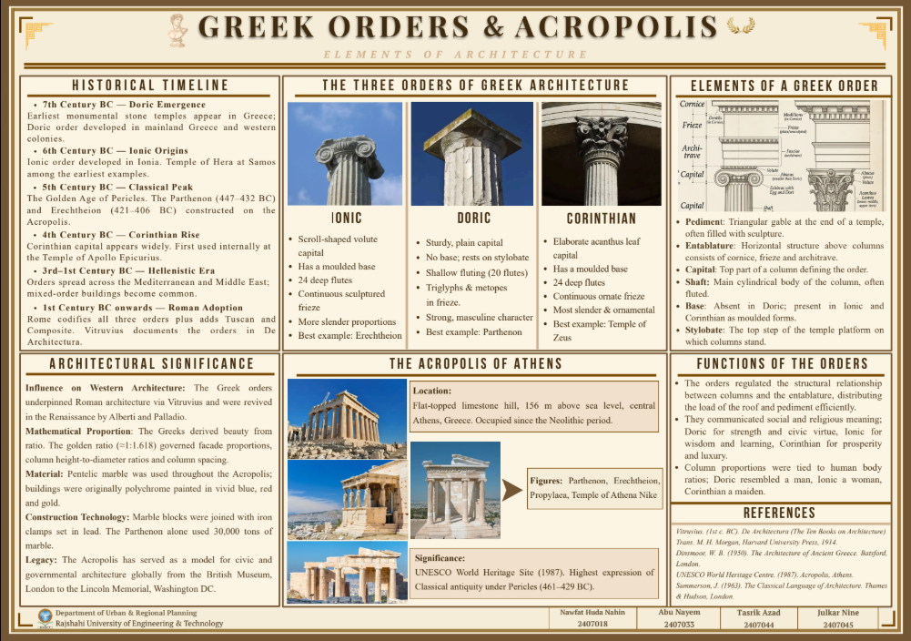
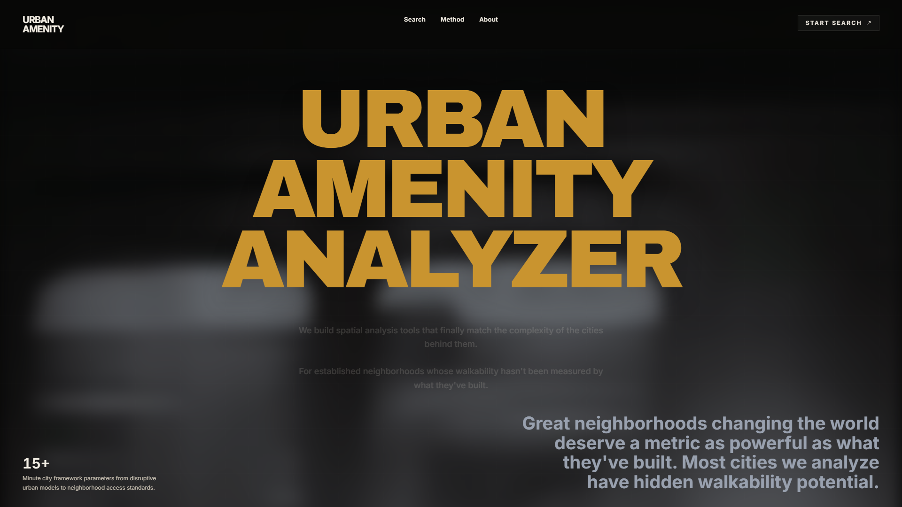
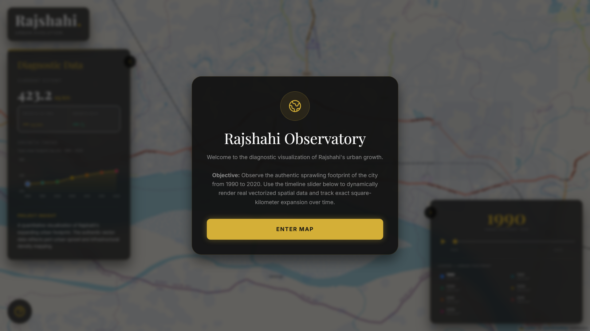
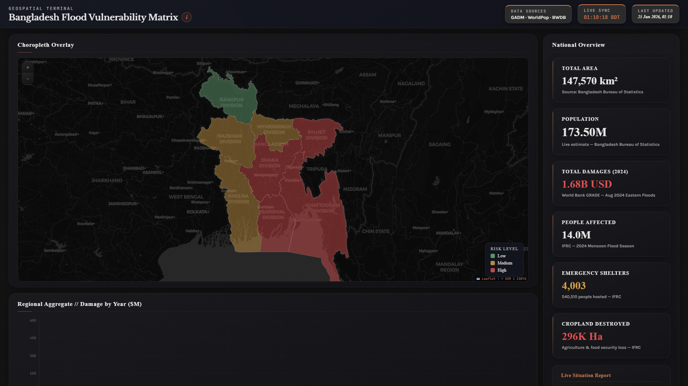
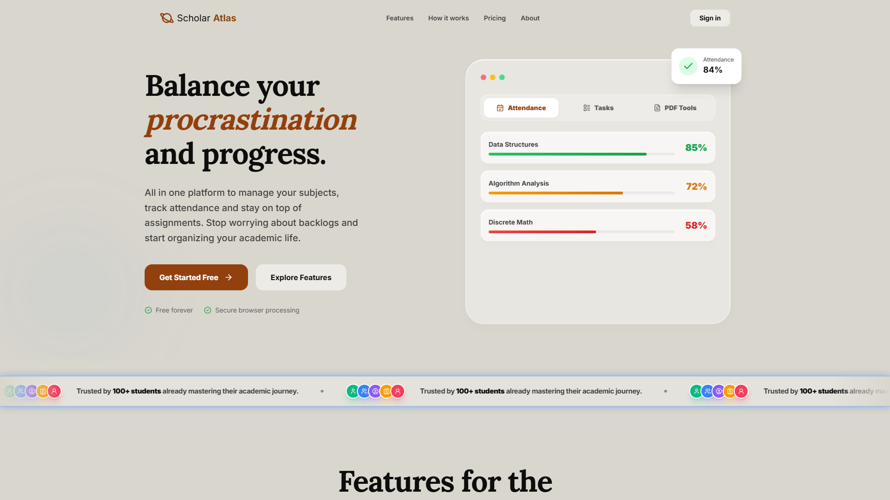
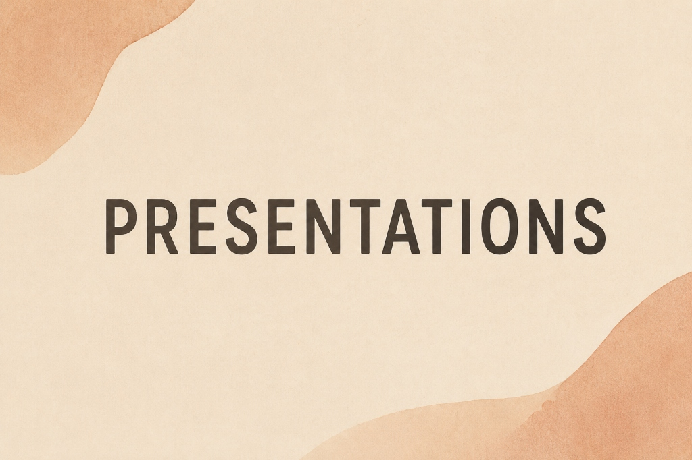
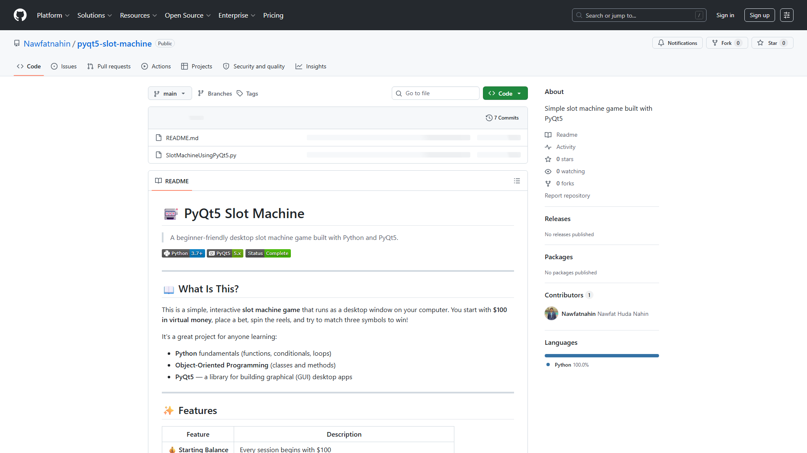
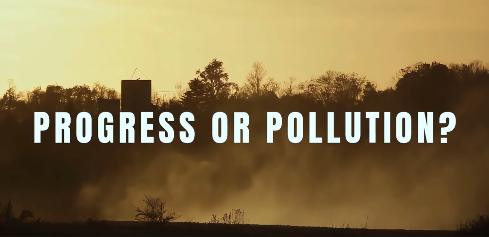

My name is Nawfat Huda Nahin. I study Urban and Regional Planning at the Rajshahi University of Engineering & Technology. My work sits at the intersection of spatial analysis, climate resilience and the kind of urban complexity that most maps fail to capture.
I am drawn to cities for the same reason I am drawn to data: both contain more than what is immediately visible. A neighborhood's flood exposure, an informal settlement's street network, a city's fragmented public amenity coverage. These are problems that show up as numbers but feel like lives. I work to close that gap.
My tools are GIS, Python and a deep interest in the built environment. My questions tend to circle back to one: who does a city actually serve and who does it leave behind?
A rigorous architectural analysis and visual narrative documenting the foundational structures of antiquity.
View Documentation →An intelligent spatial application evaluating civic walkability and infrastructure density through real-time distance-decay models.
View Live Application →A quantitative exploration of urban sprawl, tracking historical expansion footprints through meticulous vector data visualization.
Explore the Data →An editorial data interface mapping real-time hydrological risk vectors across critical demographic zones.
Access Terminal →






